Chapter 5 Results
5.1 Arrest data analysis of NYC from 2006 to 2021
5.1.1 Total Number of Crimes
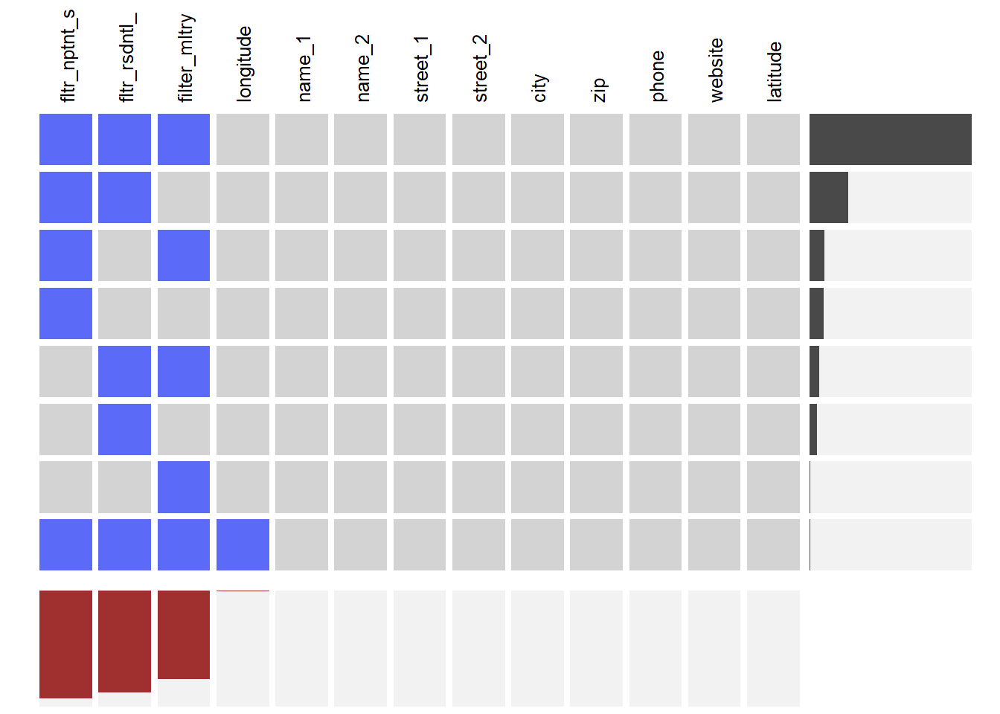 From the above figure, we can see that from 2006 to 2010, the total number of crimes in New York City has been increasing every year, with the largest increase in 2007 and 2009, at about 25,000. The number of crimes has been declining every year since 2010, with the largest decrease in 2020 of approximately 75,000 compared to 2019.
5.1.2 Time Related Analysis
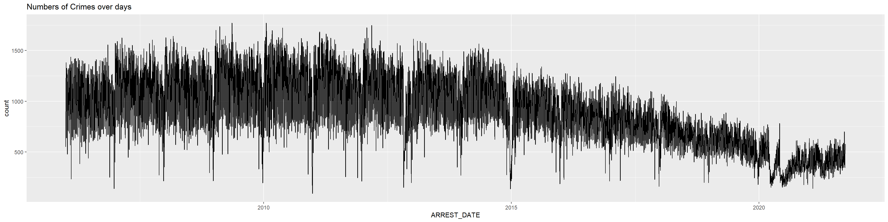
Data fluctuates greatly, which means no big relationship between adjacent days.

In each facet, the trend of the lines decrease by years in general. And numbers of arrest in weekends is a bit less than in weekdays.

In general, crimes in every quarter decrease. Compared different quarters, before 2020 it seems that numbers of arrest in the forth quarter is less than other quarters. While in the second and third quarter in 2020 numbers of arrest decrease greatly and in 2021 increase. The missing of data in the forth quarter in 2020 is due to the delay of the update of the data in NYDP.

 In general, crimes in every month decrease. Compared different months, before 2020 it seems that numbers of arrest in December is less than other months. While in the mid year of 2020 numbers of arrest decrease greatly and in 2021 increase.
In general, crimes in every month decrease. Compared different months, before 2020 it seems that numbers of arrest in December is less than other months. While in the mid year of 2020 numbers of arrest decrease greatly and in 2021 increase.
5.1.3 Classification of Crimes
In this data set provided by the NYPD, each arrested crime corresponds to two categories, OFNS_DESC and PD_DESC. OFNS_DESC is the description of internal classification which is more general. PD_DESC is the description of internal classification which is more granular than OFNS_DESC. We draw Mosaic chart, line chart and Cleveland dot plot for this two categories.
5.1.3.1 General Category(OFNS_DESC)
Due to the large number of types in OFNS_DESC, we only take the 30 most numerous types. We divide the 15-year data into three five-year data and draw a graph to see the changes in the distribution of OFNS_DESC.

From the three Cleveland Dot Plots above, we can find that although the total number of crimes has dropped, DANGEROUS DRUGS, ASSAULT 3 are still the two types of most numerous crimes. But the difference between these two types is gradually decreasing. From 2006 to 2010, CRIMINAL TRESPASS was still a serious problem, but after 2010, the number of this crime decreased significantly. It’s worth noting that the third most numerous crime has changed from CRIMINAL TRESPASS to THEFT and then to PETIT LARCENY, which are similar but the severity of the accusation has lessened.
 Those most numerous crimes are what we should pay attention to, so we take the intersection of the 30 types of the most numerous types from each year, and obtain 6 OFNS_DESC, which are ASSAULT 3, DANGEROUS DRUGS, DANGEROUS WEAPONS, FELONY ASSAULT, MISCELLANEOUS PENAL LAW and ROBBERY. From this line chart, we can find that DANGEROUS DRUGS is the most numerous type from 2006 to 2017. At the most, it’s almost three times the second highest crime , ASSAULT 3. But its number has been declining, until 2018 it is less than ASSAULT 3. And until 2020, it becomes less than FELONY ASSAULT. The number of ASSAULT 3 is around 30000. It gradually decreases after 2019. After 2018, it has become the most numerous crime type. The numbers of the other four types of crimes are all declining since 2006.
Those most numerous crimes are what we should pay attention to, so we take the intersection of the 30 types of the most numerous types from each year, and obtain 6 OFNS_DESC, which are ASSAULT 3, DANGEROUS DRUGS, DANGEROUS WEAPONS, FELONY ASSAULT, MISCELLANEOUS PENAL LAW and ROBBERY. From this line chart, we can find that DANGEROUS DRUGS is the most numerous type from 2006 to 2017. At the most, it’s almost three times the second highest crime , ASSAULT 3. But its number has been declining, until 2018 it is less than ASSAULT 3. And until 2020, it becomes less than FELONY ASSAULT. The number of ASSAULT 3 is around 30000. It gradually decreases after 2019. After 2018, it has become the most numerous crime type. The numbers of the other four types of crimes are all declining since 2006.
From the Mosaic chart, we can see that the proportion of DANGEROUS DRUGS is constantly decreasing, the proportion of ASSAULT 3 is constantly increasing, and the proportion of the sum of them in the total is decreasing.
5.1.3.2 Granular Category(PD_DESC)
Similar to the OFNS_DESC, we also only take the 30 most numerous types in PD_DESC and divide the 15-year data into three five-year data.
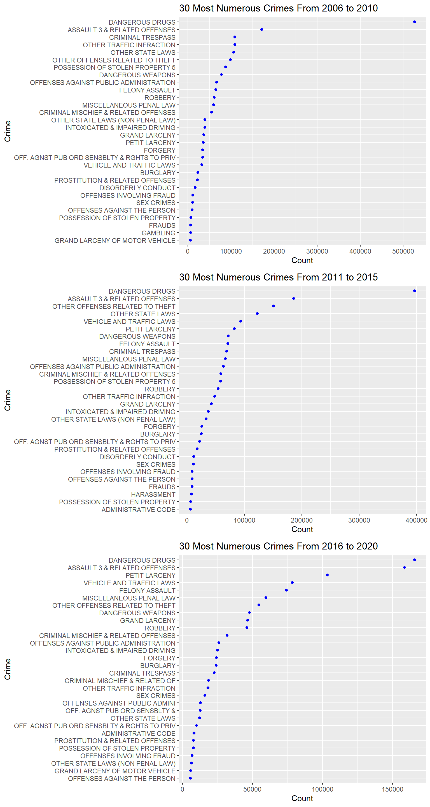
From the three Cleveland Dot Plots above, we can find that MARIJUANA POSSESSION has been most numerous crimes in 2006 to 2010 and 2011 to 2015. Similarly, CONTROLLED SUBSTANCE is also a problem during these two period. But from 2016 to 2020, the number of these two crimes has decreased. TRAFFIC also decrease after 2010. THEFT was serious during 2011 to 2015, but the situation has improved after 2015. Although it has decreased, the number of ASSAULT 3 is still high, and it has become the most numerous type of crime in the period of 2016 to 2020.
 We take the intersection of the 30 types of the most numerous types from each year. Unlike OFNS_DESC, we obtain 7 PD_DESC in common. The number of MARIJUANA POSSESSION has been greatly decreased after 2015, even fall out of top. Hence, it is not in the result of intersection. Among the remaining crimes, ASSAULT 3 has always been the most numerous type. After 2018, its number has decreased drastically. Other types of crime are also gradually decreasing from 2006.
We take the intersection of the 30 types of the most numerous types from each year. Unlike OFNS_DESC, we obtain 7 PD_DESC in common. The number of MARIJUANA POSSESSION has been greatly decreased after 2015, even fall out of top. Hence, it is not in the result of intersection. Among the remaining crimes, ASSAULT 3 has always been the most numerous type. After 2018, its number has decreased drastically. Other types of crime are also gradually decreasing from 2006.

From the Mosaic chart, we can see that although the number of ASSAULT 3 is decreasing, as the total number is also decreasing, the proportion of ASSAULT 3 has increased slightly.
5.1.4 Level of Offense
In this data set of arrest crimes in New York City, each crime corresponds one level of offense, including F(Felony), I(Infraction), M(Misdemeanor), and V(Violation).
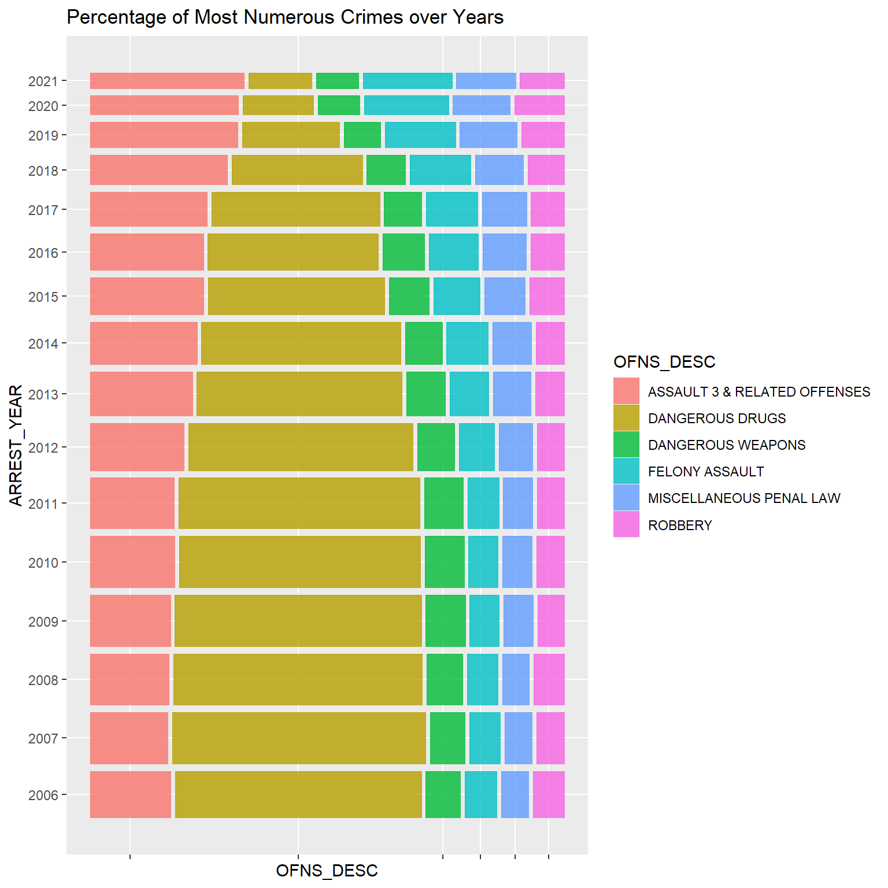
From this line chart, we can find that The number of Misdemeanor has decreased significantly since 2010. The number of Infraction has always been a small percentage of all crimes, and since it has no significant impact on society, we did not draw a separate graph of it. Felony and Violation also gradually decrease.

The number and proportion of Felony have an important impact on social security and should be of concern to us. We find that although the total number of crimes is decreasing, the proportion of felony crimes is increasing, which shows that the improvement of felony crimes has not played an important role in the reduction of the total number.
5.1.5 Jurisdiction Code
| JURISDICTION_CODE | count | percentage |
|---|---|---|
| 0 | 4393704 | 83.3930701 |
| 1 | 462933 | 8.7865282 |
| 2 | 272560 | 5.1732240 |
| other | 139461 | 2.6469878 |
| NA | 10 | 0.0001898 |

Jurisdiction responsible for arrest. Jurisdiction codes 0(Patrol), 1(Transit) and 2(Housing) represent NYPD while other represents non NYPD jurisdictions. From the histogram, we can see majority of the criminals were arrested by Patrol.
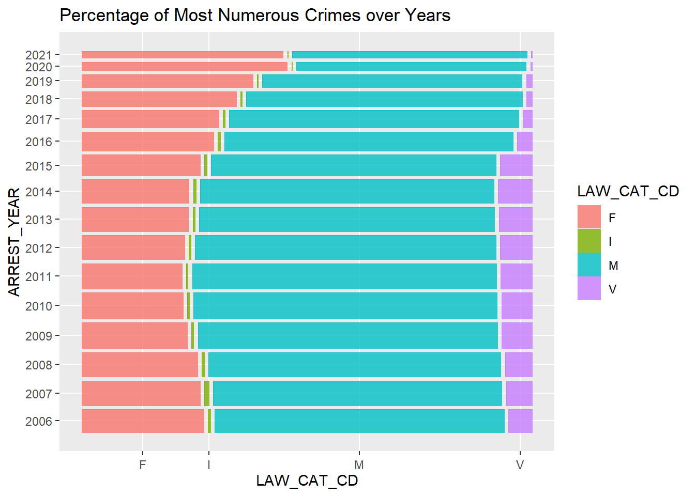
From the left graph, we conclude that the proportion of JURISDICTin recent 5 yearsION_CODE 0 which means ‘patrol’ increases over years, while JURISDICTION_CODE 1 which means ‘Transit’ decreases these years.
From the right graph, generally number of each type of JURISDICTIOn_CODE except type ‘other’ decreases over years and numbers of JURISDICTION_CODE 0 which means ‘patrol’ decreases sharply since 2014.
5.1.6 Age Group
| AGE_GROUP | count | percentage |
|---|---|---|
| <18 | 421539 | 8.0008799 |
| 18-24 | 1368110 | 25.9669540 |
| 25-44 | 2459592 | 46.6834628 |
| 45-64 | 973760 | 18.4821258 |
| 65+ | 45462 | 0.8628763 |
| unknown | 178 | 0.0033785 |
| NA | 17 | 0.0003227 |

The majority of criminals’ age_group is 25-44, followed by 18-24,45-64,<18, while the minority is 65+. This is rational as the olds and underages are less stronger and they are less likely to commit crime.
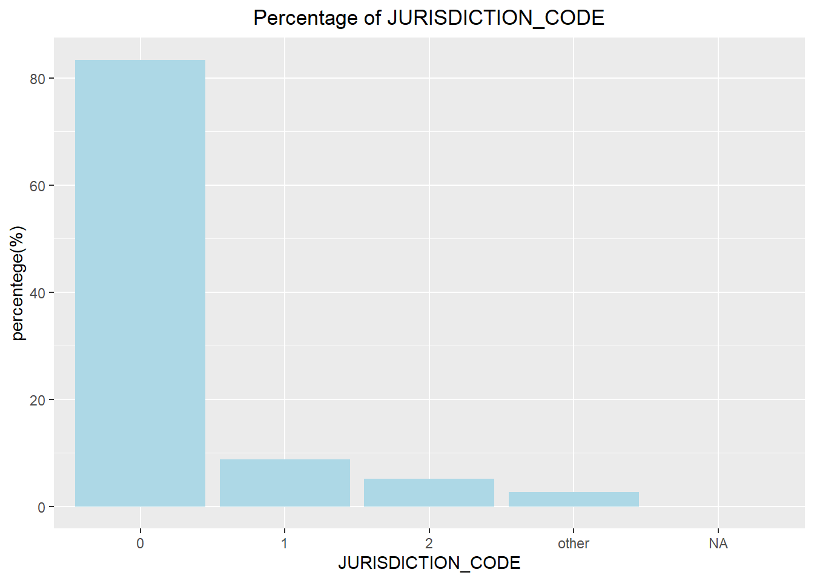
From the left graph, we conclude that the proportion of criminals younger than 18 decreases over years, while criminals between 25-44 increases.
From the right graph, generally number of criminal in each age_group except ‘65+’ decreases over years. As for ‘<18’,‘18-24’,‘25-44’, each decreases significantly since 2014, while ‘45-64’ decreases since 2010 smoothly.
5.1.7 Sex
| PERP_SEX | count | percentage |
|---|---|---|
| F | 884283 | 16.78446 |
| M | 4384180 | 83.21554 |
Numbers of male is about four times bigger than female. According to some research, due to physiological factors (primitive gender differences), Male and female body structures are different, and naturally there will be some differences in various aspects. In terms of endocrine, men will have more eandrogens, which makes men stronger and more aggressive.Women have more estrogen in their bodies, making them less aggressive than men. Of course, because women are generally less physically powerful than men, they are more difficult to commit crimes, which will also affect the crime rate.

From the left graph, the proportion of sex seems to have no big difference over years.
From the right graph, generally numbers of criminal in both sex decrease since 2014, while the trend of female is more smooth than male.
5.1.8 Comprehensive analysis

From the mosaic, it seems that the proportion of female criminals in the under-ages is greater than myc2021adults. This maybe because the primitive gender differences are not so big in under-ages than in adults.
5.1.9 Crime Geographical Analysis
In our dataset, there are some columns includes information about geographic information:
ARREST_BORO: Borough of arres. There are five boroughs in NYC: B(Bronx), S(Staten Island), K(Brooklyn), M(Manhattan), Q(Queens)
ARREST_PRECINCT: Precinct where the arrest occurred
Latitude + Longitude : coordinates for Global Coordinate System
5.1.9.1 Borough Level Analysis
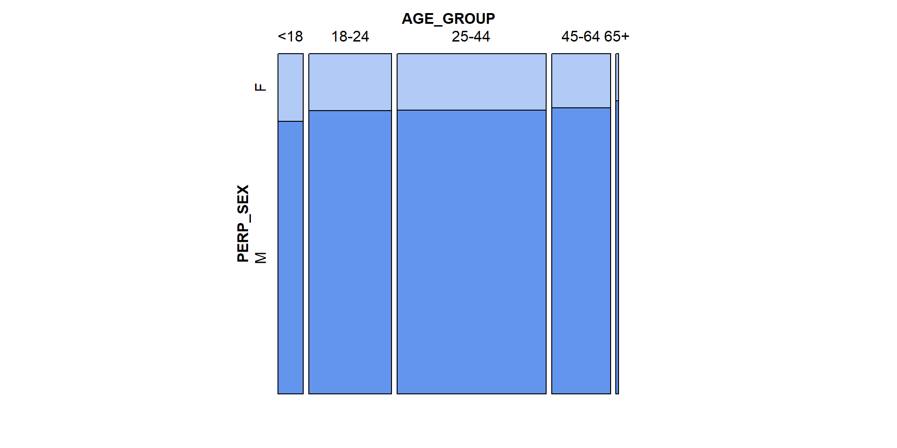
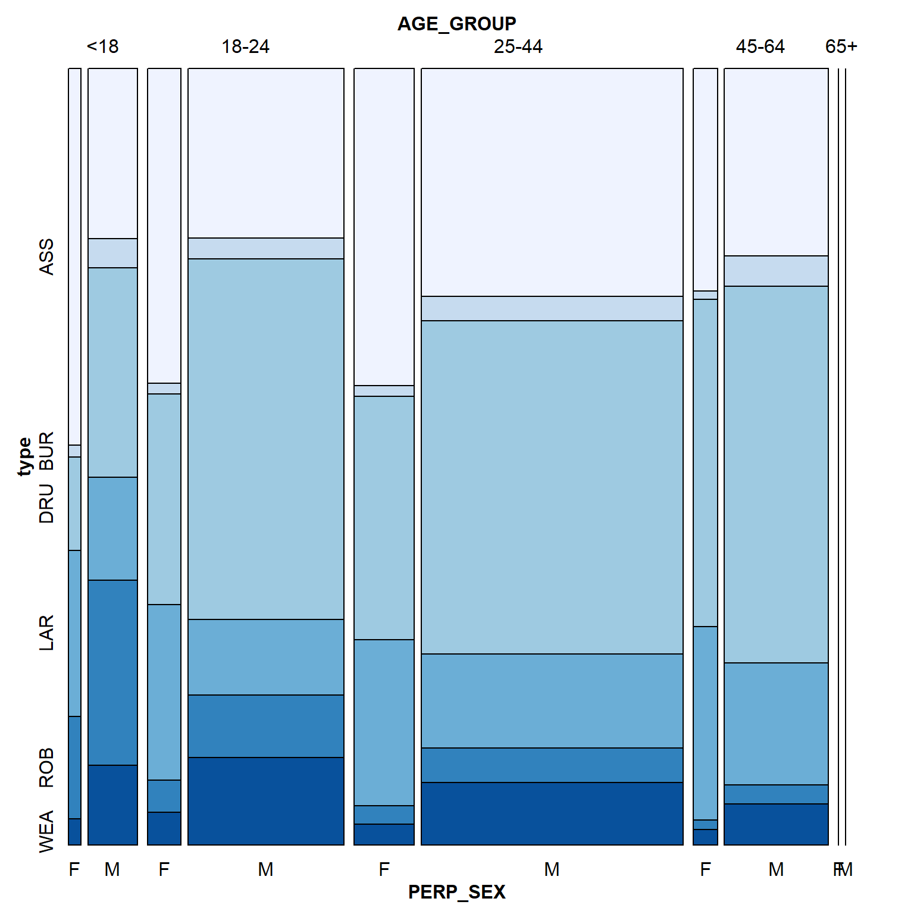 From the pie chart, we can know that the area with the most crime is Brooklyn, and Staten Island has least crime numbers. Besides, we draw mosaic maps reflecting the proportion of crimes in different regions in over years. We found that the proportion of crime in Queens and Staten Island is increasing, especially after 2015.
5.1.9.2 Precinct Level Analysis


alt text here
From the histograms of boroughs and the precinct map in NYC, we can see the different pattern of crimes on different police precincts. In Manhattan, crime number of each precincts are relatively even (except for precinct 14), howeverr, Bronx has a distrubition with higher variance. Also, we can
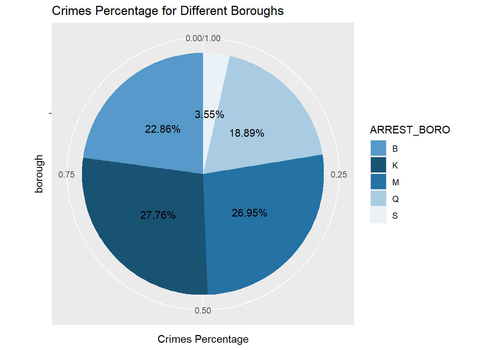
We pick out the top 20 precincts with the most criminal records and found that 9 of them (almost 50%) are in Bronx, which is the most among 5 boroughs.
5.1.9.3 NYC crime maps
Comparing the drug crime situation in 2018 and 2020, we can find the following two points:
From 2018 to 2021, dangerous drug crimes have decreased a lot.
Drug crimes are clustered on the map, we can find that the southern part of Bronx is an area with more serious drug crimes.
From this two plot, we can find that larceny crimes are concentrated on the midtown and downtown, which around the central park. From 2018 to 2020, the larceny crimes on Manhattan decrease a lot however the number of PETIT LARCENY in other areas has no big difference.
5.2 Covid-19 VS Crime in NYC
5.2.1 Time Series Analysis of Covid-19
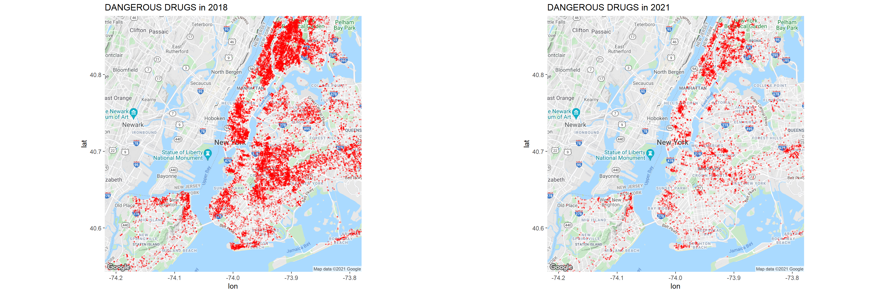
Case count is greater than the other two. The first peak occurs around April 2020, the second peak occurs around the February 2021 maybe related to the cold temperature, then it decrease maybe due to the use of vaccine, while the third peak which maybe related to Delta occurs around September 2021.
The hospitalized count and death count is quite less than case count. Considering the rate, we conclude as first both death rate and hospitalized rate are high and then decrease in general.
5.2.2 Hate Crime

5.2.2.1 Offense Category


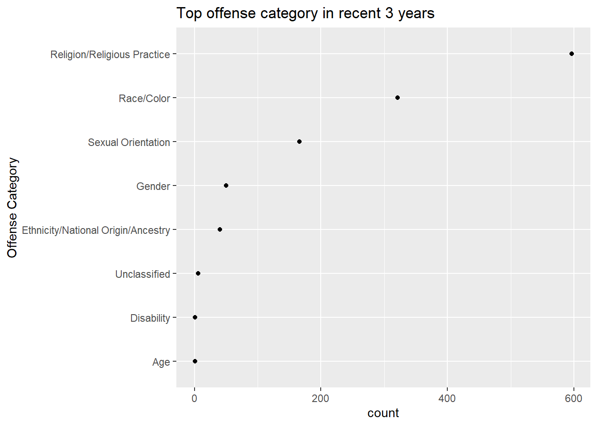
5.2.2.2 Borough Level Analysis

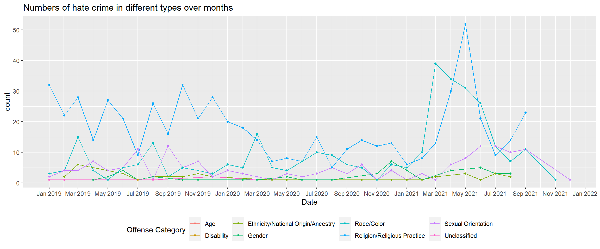
5.3 Mental Health Center VS Crime in NYC
Here we have the data about the distribution of mental-health-service in NYC, so we want to explore if mental health center is related to the crime distribution, or is there any advice about mental health center construction that we can come up with.
5.3.1 Mental Health Center in Boroughs
| Borough | n |
|---|---|
| B | 86 |
| K | 113 |
| M | 172 |
| Q | 85 |
| S | 31 |
| NA | 5 |
This is a scatter plot between Mental Health Service Finder Count VS Crime Count. Even if we just have 5 borough, we can find there is a rough positive relation between two counts. It means that now there are more mental health centers in boroughs with more crimes. Manhattan has relatively more mental centers and Brooklyn & Bronx can build more Mental Health Center.
5.3.2 Geographical Analysis
According to some scientific researches, drug use and gun crime are related to mental health to a certain extent. So we explore the geographic distribution of these two crimes and compared them with the distribution of mental health centers.
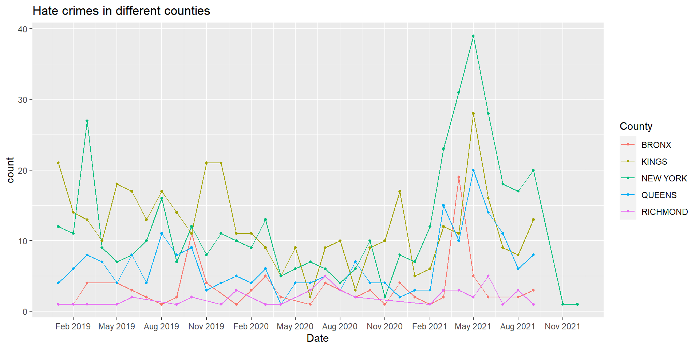
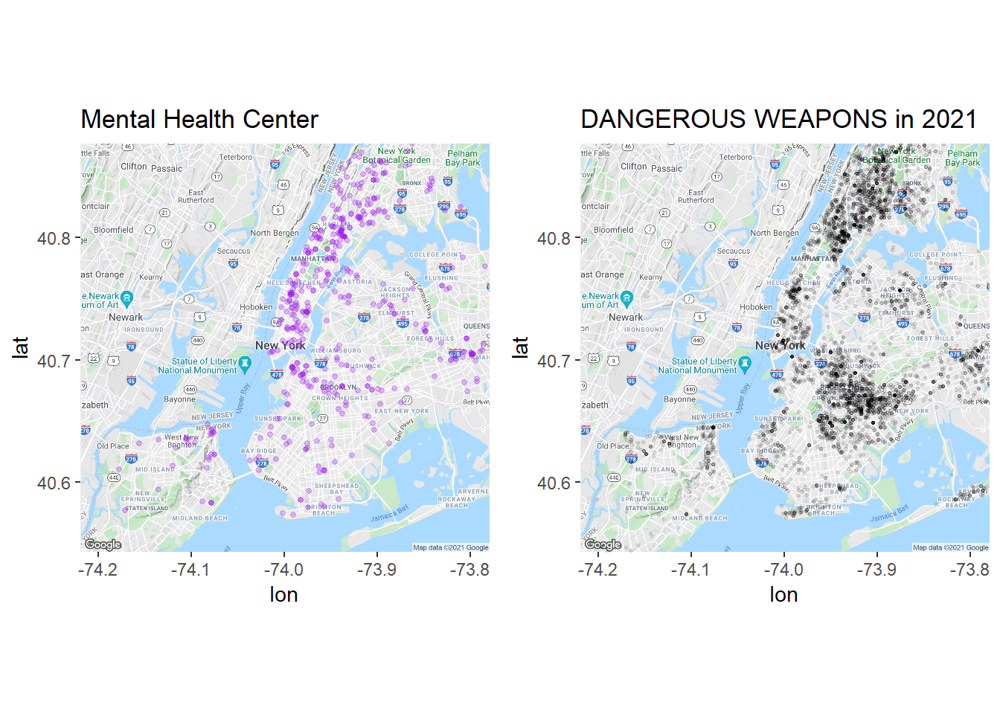
From these for maps, we can find that the location of the mental health center is very consistent with the distribution of drug crime and weapon crime’s sites, which reflects that New York’s mental health construction is very complete and supportive. Besides, there is still room for improvement such as adding mental health service center in Rockway Beach and the area around EAST NEW YORK in Brooklyn.